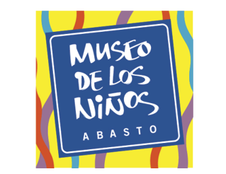
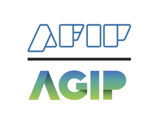

Feria del Libro Infantil y Feria del Libro Internacional, organizadas por la Fundación El Libro
Desde el 2011 al 2015 participamos con un stand propio en la Feria del Libro Infantil y Juvenil, con juegos de mesa, lecturas de cuentos, obras de teatro, la presentación de libros de cuentos propios, entre otras propuestas para niños. Desde 2016 participamos con estas actividades en el stand del Gobierno de la Ciudad de Buenos Aires, junto a los Ministerios de Educación y Cultura. Por otra parte, en 2017 también formamos parte de la Feria Internacional del Libro como parte del stand que el Gobierno de la Ciudad instaló junto a otros organismos, donde se contaron cuentos de nuestros libros y se expusieron dos maquetas interactivas. Objetivos de la estrategia: La formación en valores ciudadanos de los niños. El desarrollo de actitudes de responsabilidad frente al bien común. La importancia de cuidar los bienes públicos.
 Juego en el Museo de los Niños del Abasto
A través de un juego interactivo montado sobre una pared se explica de manera lódica y didáctica la importancia de pedir ticket después de hacer una compra, el circuito de los impuestos y su relación con el mantenimiento de los bienes y espacios públicos de la Ciudad. Objetivos: Explicar el circuito de los impuestos. Desarrollar la relación entre impuestos y bienes públicos. Diferenciar los bienes públicos de los bienes privados.
Taller de Educación Tributaria y Ciudadanía Fiscalía en el Barrio 31
Esta iniciativa se efectúa en conjunto con el Departamento de Educación Tributaria de AFIP y el Centro de Desarrollo Emprendedor y Laboral (CEDEL) de la Secretaría de Integración Social y Urbana, para introducir a comerciantes, vecinos y feriantes del barrio en la temática tributaria y ciudadana. Se abordan los tributos recaudados a nivel nacional y local, el Monotributo y los Ingresos Brutos con sus categorías y requisitos, la importancia de la entrega y el pedido de comprobantes, entre otras cuestiones. Objetivos: Introducir a los vecinos, comerciantes y feriantes del barrio en tributos y ciudadanía. Dar a conocer impuestos a nivel nacional y local. Explicar la importancia de la entrega y el pedido de ticket y factura.
Taller de Capacitación Tributaria y Fiscal en la Defensoría del Pueblo
Esta actividad organizada junto con la Defensoría del Pueblo (CABA) está dirigida al personal que realiza atención primaria a los vecinos, tanto de forma personal como a través de medios digitales, para incorporar mayores herramientas de conocimiento e informaciÚn sobre los tributos de la Ciudad, que le permita identificar y clasificar mejor la consulta del contribuyente y brindar un mejor asesoramiento y orientacián.
 Núcleos de Asistencia Fiscal (NAF)
Esta propuesta de capacitación organizada junto con el Departamento de Educación Tributaria de AFIP otorga a los alumnos de carreras de Ciencias Económicas conocimientos vinculados al ejercicio de su profesión, transmitiendo no sólo la Ética profesional sino también el sentido social de los impuestos. La Universidad se constituye en un espacio intermedio entre AFIP, AGIP y la comunidad, otorgando a los estudiantes las herramientas necesarias para que puedan asesorar a los contribuyentes sobre asuntos relacionados los impuestos y fiscalidad. Objetivos de la estrategia: Proporcionar a los alumnos prácticas sobre asesoramiento fiscal. Formar a los estudiantes para que asesoren de manera gratuita a la comunidad sobre cuestiones fiscales básicas. Generar conocimientos significativos en los futuros profesionales.